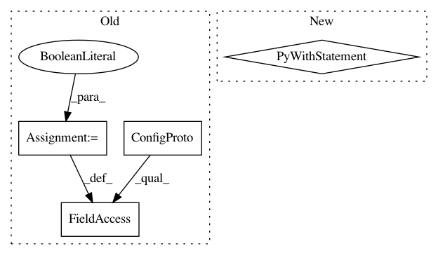

ae585178b8f190bcbf7f1433a731fa27fc32271a,niftynet/engine/application_driver.py,ApplicationDriver,run_application,#ApplicationDriver#,58
Before Change
assert self._app_graph is not None,\
"please call initialise_application first"
config = tf.ConfigProto()
config.log_device_placement = False
config.allow_soft_placement = True
with tf.Session(config=config, graph=self._app_graph) as sess:
sess.run(self._init_op)
coord = tf.train.Coordinator()
After Change
assert self.graph is not None, \
"please call initialise_application first"
config = ApplicationDriver._tf_config()
with tf.Session(config=config, graph=self.graph) as session:
if self.is_training:
self._training_loop(session)
else:
self._inference_loop(session)
def _randomly_init_or_restore_variables(self, sess):
if self.is_training and self.initial_iter == 0:
sess.run(self._init_op)
print("trainable parameters from random initialisations ...")
In pattern: SUPERPATTERN
Frequency: 3
Non-data size: 4
Instances
Project Name: NifTK/NiftyNet
Commit Name: ae585178b8f190bcbf7f1433a731fa27fc32271a
Time: 2017-07-23
Author: wenqi.li@ucl.ac.uk
File Name: niftynet/engine/application_driver.py
Class Name: ApplicationDriver
Method Name: run_application
Project Name: keras-team/autokeras
Commit Name: f4503bb3a3be014b452f54d8e2d187bb6419f627
Time: 2018-08-01
Author: jhfjhfj1@gmail.com
File Name: autokeras/classifier.py
Class Name: ImageClassifier
Method Name: predict